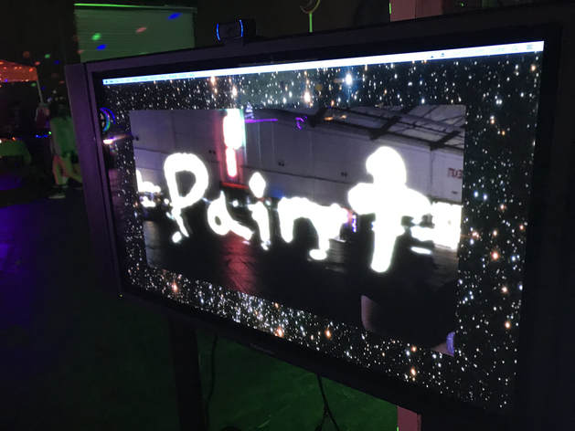

PointCloud experiment of natural real world objects converted to particle systems to be manipulated by simulated force fields.
Pixelated photogrammetry archive of natural objects in their natural environments. Presented online through three.js.
Historium Virtualis investigates the rich history of the Santa Clara Mission Cementery. The good, the bad and the ugly.
Signs as Reality combines the voice of Alan Rath with photogrammetry scan of local mall. The resulting mesh is processed through Blender with various modifiers.
Computer Spin is an sensory experience that mixes experimental soundscapes with photogrammetry environments.
PSX Summer focuses on the nostalgia of early 3D graphics by attempting to mimic the style of PSX graphics. Completed in Blender and After Effects.
Tyler Run 2020 is an experimental response to COVID-19 utilizing mixamo animations, photogrammetry and Blender.
Virtual painting made in Tiltbrush and rendered in Unity 3D.

Cellular Painting, developed in Max/MSP 7, allowed participants to paint illustrations by using their cell phone flashlights and illuminated screens to act as a "light wand" to paint with light. Cellular Painting was exhibited in Maker Faire 2017.

Virtual Gallery was the precursor to my art practice and research spawning from my passion for game development and immersive virtual environments. Virtual Gallery is my first virtual space utilizing Unity 3D game engine. As many aspiring young artist, I wanted to develop a virtual gallery to host my various art projects during the time.